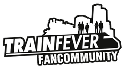

Train Fever
Dieser Artikel wurde für die folgenden Ubuntu-Versionen getestet:
Ubuntu 14.04 Trusty Tahr
Zum Verständnis dieses Artikels sind folgende Seiten hilfreich:
Train Fever  ist eine kommerzielle Wirtschaftssimulation, in der der Spieler ein funktionierendes Verkehrsnetz auf- und ausbauen muss. Das Spiel erstreckt sich über den Zeitraum von 1850 bis ins Jahr 2050 und bringt alle zur jeweiligen Epoche passenden Transportmittel zum Einsatz. Verkehrslinien müssen erstellt und verwaltet, die Infrastruktur den Gegebenheiten angepasst und Kundenwünsche umgesetzt werden. Im Mittelpunkt aller Planung steht der Mensch.
ist eine kommerzielle Wirtschaftssimulation, in der der Spieler ein funktionierendes Verkehrsnetz auf- und ausbauen muss. Das Spiel erstreckt sich über den Zeitraum von 1850 bis ins Jahr 2050 und bringt alle zur jeweiligen Epoche passenden Transportmittel zum Einsatz. Verkehrslinien müssen erstellt und verwaltet, die Infrastruktur den Gegebenheiten angepasst und Kundenwünsche umgesetzt werden. Im Mittelpunkt aller Planung steht der Mensch.
 | |
| Hauptmenü | Spielszene |
Installation¶
Auf der Entwicklerseite stehen als Erwerbsmöglichkeiten der Humble Store sowie Steam zur Verfügung. Je nach gewählten Vertriebsweg wird das Spiel entweder über die Vertriebsplattform direkt gekauft oder über den kleinen Umweg im Humble Store. Nach der Verknüpfung mit einem bestehenden Steam-Zugang wird das Spiel dort freigeschaltet und über den Steam-Client installiert [1].
| Schematische Darstellung einer Stadt |
Bedienung¶
Der Spieler wird durch ein Tutorial in das Spielprinzip eingeführt. Über F1 kann die Hilfe jederzeit aufgerufen werden.
Im Spiel selber gibt es neben den Menschen noch Waren, welche auf dem kürzesten Wege transportiert werden. Die Rohstoffe werden von der Industrie benötigt, welche in der Nähe von Städten angesiedelt und auf Arbeitnehmer angewiesen ist. Die produzierten Waren gelangen schließlich in den Verkauf. Konsum, Arbeit und Vergnügen bestimmen das Verhalten der Einwohner. Um an ihr Ziel zu kommen, wählen sie den kürzesten Weg - idealerweise mit dem entsprechend ausgebauten Verkehrsnetz. Der Wachstum der Wohnvierteln wiederum ist abhängig von der angesiedelten Industrie und den vorhandenen Attraktionen. Gewerbegebiete wachsen, indem so viele Menschen wie möglich die hergestellten Produkte kaufen und somit dazu beitragen, dass eine ganze Branche wächst. Diese benötigt dazu Rohstoffe und Mitarbeiter. Durch Minen und Raffinerien kann der Bedarf gedeckt werden. Erholungsorte wachsen nur bei genügend Publikumsverkehr.
Modifikationen¶
In Train Fever gibt es eine Vielzahl von Möglichkeiten, das Spiel den eigenen Bedürfnissen entsprechend anzupassen. Die Modifikationen erstrecken sich unter anderem über Gebäude, Transportmittel und Namenserweiterungen. Bereitgestellt werden diese Änderungen und Erweiterungen durch die Community und es sind auch entsprechende DLC ("downloadable_contents") seitens der Entwickler geplant.
Die von der Community erstellten Erweiterungen von der Internetseite herunterladen, entpacken [2] und gemäß den Angaben ins Spiel integrieren. Detaillierte Information zu den einzelnen Mods findet man auf der Downloadseite.
| Einstellungen | ||
| Erweiterung | Pfad | Beschreibung |
| Fahrzeuge | ~/.steam/steam/SteamApps/common/Train Fever/res | Den Ordner res aus dem Archiv in des Hauptverzeichnis des Spiels kopieren/verschieben. |
| Gebäude | ~/.steam/steam/SteamApps/common/Train Fever/res | Den Ordner res aus dem Archiv in des Hauptverzeichnis des Spiels kopieren/verschieben. |
| Güter | ~/.steam/steam/SteamApps/common/Train Fever/res | Den Ordner res aus dem Archiv in des Hauptverzeichnis des Spiels kopieren/verschieben. |
| Hintergrundmusik | ~/.steam/steam/SteamApps/common/Train Fever/res/audio/music/ | Die Spielmusik liegt als ogg/vorbis-Datei vor. Sofern man eigene Musik hören möchte, muss diese im entsprechenden Format vorliegen und in das Verzeichnis kopiert werden. |
| HUD | ~/.steam/steam/SteamApps/common/Train Fever/res/texture/ui/ | Den Ordner res aus dem Archiv in des Hauptverzeichnis des Spiels kopieren/verschieben. |
| Städte- und Straßennamen | ~/.steam/steam/SteamApps/common/Train Fever/res/config/name/de | Die Datei towns.lua und/oder streets.lua in dem Verzeichnis ersetzten. |
| Texturen | ~/.steam/steam/SteamApps/common/Train Fever/res | Texturen in diesen Ordner extrahieren bzw. entpacken. |
Hinweis:
Vor jedem Eingriff sollte eine Sicherung der entsprechenden Verzeichnisse vorgenommen werden. Alternativ eine Wiederherstellung der Originaldateien über die Wiederherstellungsfunktion von Steam.
Tastenkürzel¶
| Tastenkürzel | |
| Taste(n) | Funktion |
 / /  | Karte bewegen |
| Q / E | Kameraperspektive seitlich beeinflussen. |
 | Freie Kameraperspektive |
| (Mausrad) | In die Karte hinein- oder herauszoomen. |
| Tab ⇆ | Spielgeschwindigkeit beeinflussen. |
| M + N | Lageausrichtung der Stationen beim Bau ändern. |
| Entf | Schließt alle geöffneten Spielfenster. |
| F1 | Spielhilfe |

Infobox¶
| Train Fever | |
| Genre: | Wirtschaftssimulation |
| Sprache: |   |
| Veröffentlichung: | 2014 |
| Entwickler: | Urban Games  |
| Minimale Systemvoraussetzungen: | Intel Core 2 Duo - mind. 2 GB RAM - Nvidia Geforce 8800 oder besser, Radeon 5670 mit 512 MB VRAM |
| Medien: | Download / DVD (1) |
| Strichcode / EAN / GTIN: | - |
| Läuft mit: | nativ |


- Erstellt mit Inyoka
-
 2004 – 2017 ubuntuusers.de • Einige Rechte vorbehalten
2004 – 2017 ubuntuusers.de • Einige Rechte vorbehalten
Lizenz • Kontakt • Datenschutz • Impressum • Serverstatus -
Serverhousing gespendet von